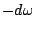
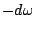
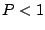
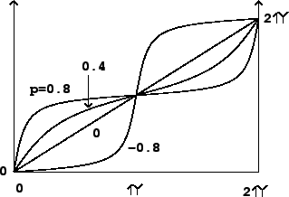

Sometimes a filter is applied to get a desired phase change, rather than to
alter the amplitudes of the frequency components of a sound. To do this
we would need a way to design a filter with a constant, unit frequency response
but which changes the phase of an incoming sinusoid in a way that depends on its
frequency. We have already seen in Chapter 7 that a delay of length  introduces a phase change of , at the angular frequency
introduces a phase change of , at the angular frequency  .
Another class of filters, called
all-pass filters,
can make phase changes which are more interesting functions of
.
Another class of filters, called
all-pass filters,
can make phase changes which are more interesting functions of  .
.
To design an all-pass filter, we start with two facts: first, an elementary recirculating filter and an elementary non-recirculating one cancel each other out perfectly if they have the same gain coefficient. In other words, if a signal has been put through a one-zero filter, either real or complex, the effect can be reversed by sequentially applying a one-pole filter, and vice versa.
The second fact is that the elementary non-recirculating filter of the second form has the same frequency response as that of the first form; they differ only in phase response. So if we combine an elementary recirculating filter with an elementary non-recirculating one of the second form, the frequency responses cancel out (to a flat gain independent of frequency) but the phase response is not constant.
To find the transfer function, we choose the same complex number  as
coefficient for both elementary filters and multiply their transfer functions:
|  |
Complex coefficients give similar phase response curves, but the frequencies at
which they cross the diagonal line in the figure are shifted according to the
argument of the coefficient  .
.